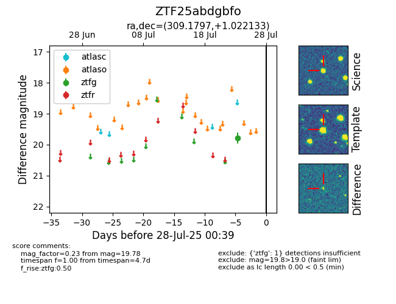

Target ZTF25abdgbfo at 2025-07-28 00:39, see:
FINK: fink-portal.org/ZTF25abdgbfo
Lasair: lasair-ztf.lsst.ac.uk/objects/ZTF25abdgbfo
ALeRCE: alerce.online/object/ZTF25abdgbfo
alt names
ZTF25abdgbfo (ztf,fink)
coordinates:
equatorial (ra, dec) = (309.1797,+1.02213)
galactic (l, b) = (46.6050,-22.73144)
photometry
last ztfg=19.78
1 ztfg detections
